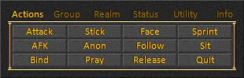

Command
The Command window contains buttons that allow you to perform assorted actions and toggle the display of various windows.
The window will appear when you click on the button labeled "Command" in the Main Menu of the user interface.
- Conceal
There is nothing shown when the window is concealed. The window is invisible with no graphics or controls to minimize the amount of memory used. Nothing will appear on the screen when you attempt to activate the window.
- Disable
Style 1
This cubed style Command window is tabbed and allows you to perform most actions and access most windows.

Style 2
This vertical style Command window is similar to the one in the original Mythic UI and allows you to perform many of the most common actions and access some windows.

Style 3
This horizontal style Command window is tabbed and allows you to perform most actions and access most windows. It is best used with wide displays when the resolution width is set to at least 1280 pixels.
Style 4
This horizontal style Command window uses circular Sohwyn buttons. Some of the buttons are split and open more than one type of window. From left to right the buttons open the following windows: Realmwar, Map, Atlas, Social, Friends, Realm Ranks, Armor Resists, Crafting, Healer Helper Horizontal, Healer Helper Vertical, Group Buffs, Concentration, Mini Attributes, Mini Resists, Quest Journal, and Master Level.
Style 5
This vertical style Command window uses circular Sohwyn buttons. Some of the buttons are split and open more than one type of window. From top to bottom the buttons open the following windows: Realmwar, Map, Atlas, Social, Friends, Realm Ranks, Armor Resists, Crafting, Healer Helper Horizontal, Healer Helper Vertical, Group Buffs, Concentration, Mini Attributes, Mini Resists, Quest Journal, and Master Level.

Style 6
This vertical style Command window is similar to the one in the Derida UI and allows you to access many of the most common windows and perform some actions.